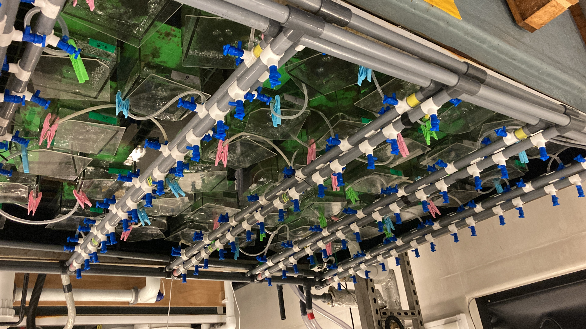

SEA-Quester
Current (2025–present) · EU Grant #101136480
SEA-Quester investigates marine carbon cycling in novel ecosystems in the polar seas that are emerging due to climate change. Melting sea ice, changing currents, and a warmer ocean are already changing species distribution, behaviour, and metabolism. The project addresses how these changes will impact marine biodiversity and ecosystem functions and services, like carbon sequestration, in the polar seas. Understanding these impacts is crucial for meeting biodiversity and climate change mitigation targets.
Learn more
Benthic-Offshore Wind Interactions Evaluation (BOWIE)
Completed (2024–2025) · NERC Grant #NE/X008991/1
The ECOWind BOWIE project addresses the impact of offshore wind expansion on marine ecosystems and biodiversity, aiming to support sustainable decision-making. Using environmental research and stakeholder engagement, it fills knowledge gaps and aids in implementing robust approaches to offshore wind development. Autonomous underwater vehicles survey seabed habitats, while engagement with stakeholders helps understand decision-making uncertainties. BOWIE facilitates alignment between offshore wind expansion and marine spatial planning pressures, promoting biodiversity and environmental recovery.
Learn more

Implications of intraspecific trait variability across different environmental conditions for projections of marine ecosystem future
Completed (2024) · NERC Grant #NE/T001577/1
This project focuses on the impact of species diversity and biological traits on ecosystem responses to environmental changes. It aims to quantify traits affecting species' vulnerability and assess how trait variation influences ecosystem functioning. See related publications (Williams et al. 2024, Scientific Reports; Williams et al. 2024, Ecology and Evolution).
Learn more

Geospatial mapping of impacts from offshore wind turbines on benthic community and heritage assets
Completed (2023)
This project assesses the impact of offshore renewable energy (ORE) expansion on heritage sites and marine ecology to meet UK's net zero goals. See related publication (Putuhena, Williams et al. 2025, Scientific Data).
Learn more

Building and enabling UK-Greenland research capacity to address effects of anthropogenic stressors on benthic ecosystems
Completed (2023)
This project aims to assess the impacts of warming and metal contamination on Arctic ecosystems, particularly in the Greenland region, where understanding remains limited. Through experiments and community engagement, the project will equip researchers to anticipate ecological shifts and contribute to effective decision-making for local systems.
Learn more
Ecological consequences of climatic forcing in the Arctic marine benthos
Completed — PhD thesis (2019–2023)
The combined efforts of this PhD thesis explores the magnitude, direction and context of biological responses to past, present and future climate change – and their concomitant effects on benthic ecosystem functioning in one of the world's most rapidly changing environments.
Learn more

Predicting Anthropogenic Impacts on Ecosystem Functioning using a Response-Effect Trait Framework
Completed (2022)
A scientific consortium seeking to address the status of the functional trait approach in marine benthic ecology.
Learn more

Communication of Climate Change impacts in the Arctic
Completed (2021–2022)
An early career researcher consortium seeking to educate young audiences on local, regional and global threats of Arctic climate change via social media posts.
Flora and Fauna
The Ocean
Sea Ice
Glaciers

Building and enabling UK-Russian research capacity to address climate change effects on Arctic marine ecosystems
Completed (2020–2021)
The Arctic region is undergoing some of the most rapid rates of change in the world in response to climatic forcing, with dramatic transformations underway in the flora and fauna of coastal Arctic habitats that will affect many ecosystem properties and the delivery of ecosystem services.
Learn more
Amundsen 2021 Expedition
Completed (2021)
Leg 2 of the expedition encompassed the use of the ROV to explore coral seep habitats and involved significant contributions to the esteemed ArcticNet project. The journey spanned from St. John's to Iqaluit, constituting a profound and noteworthy scientific endeavor. See related publications (Williams et al. 2024, Scientific Data; Williams et al. 2024, Chemical Geology).
Learn more

BLUEcoast
Completed (2019)
Experimental simulation of consecutive storms on coastal sediment integrity and biogeochemical cycling.
Learn more

Changing Arctic Ocean Seafloor Cruise JR18006
Completed (2019)
A multidisciplinary team of like-minded polar benthic scientists collecting physical, chemical and biological samples across a gradient of sea-ice. See related dataset (Williams et al. 2023, NERC EDS UK Polar Data Centre).
Learn more